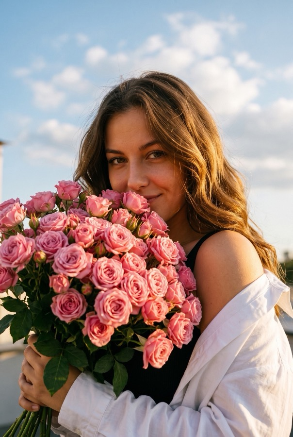
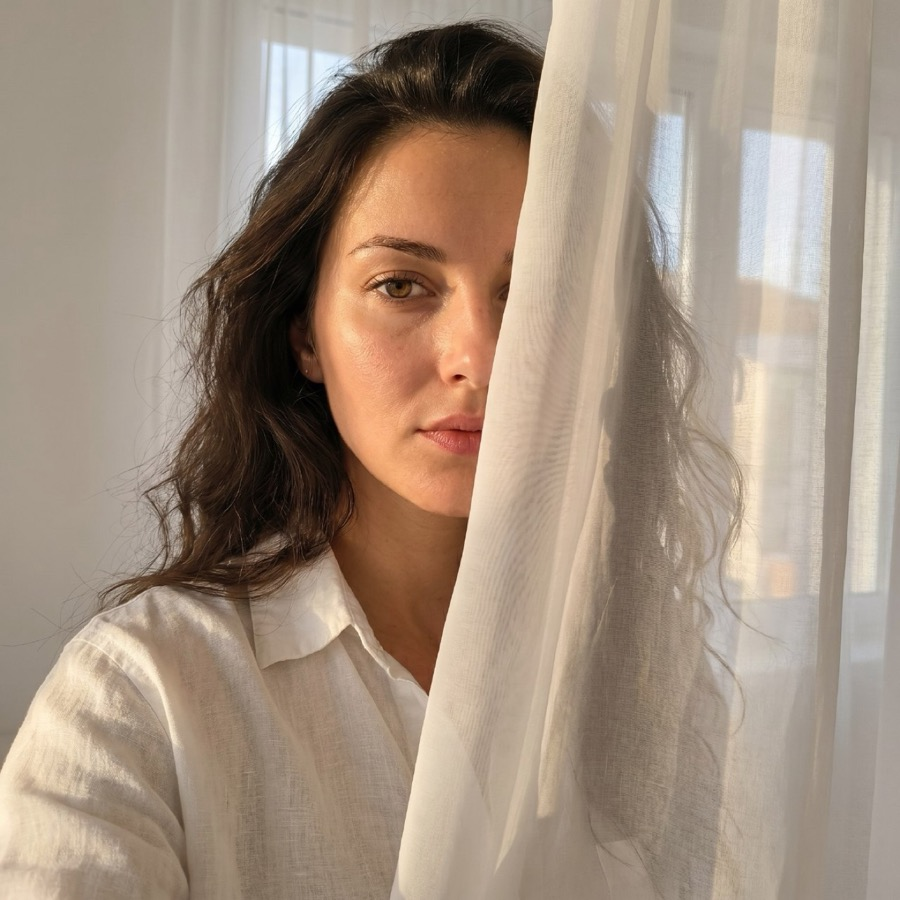
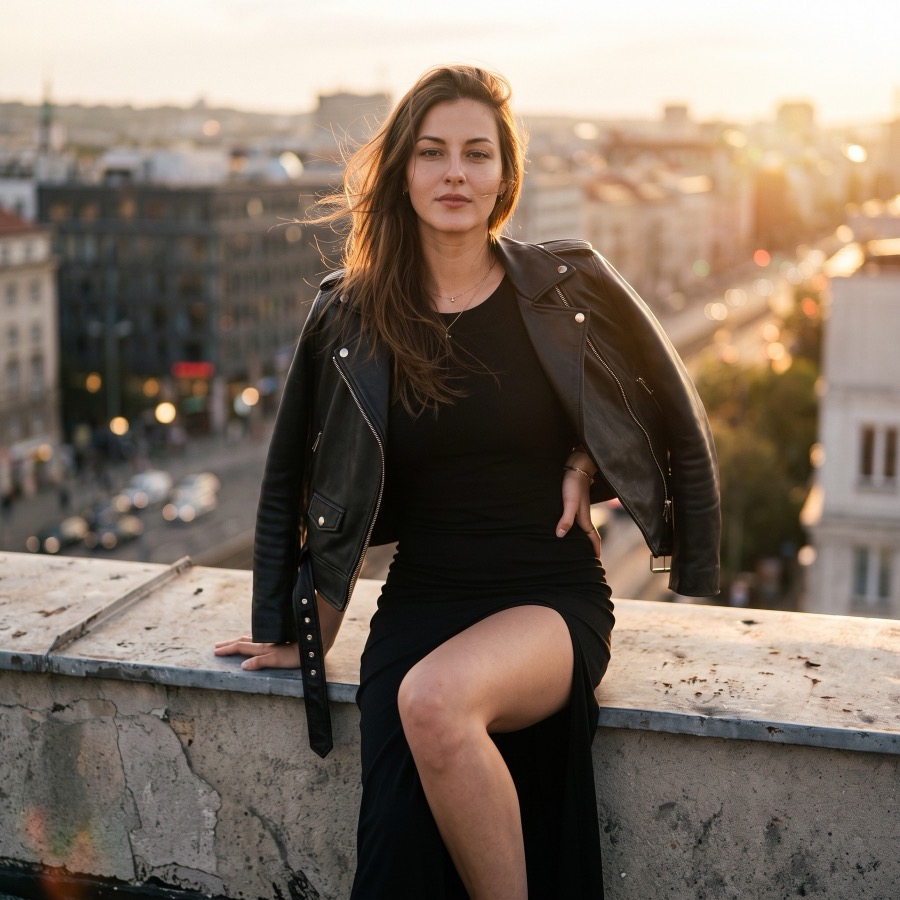
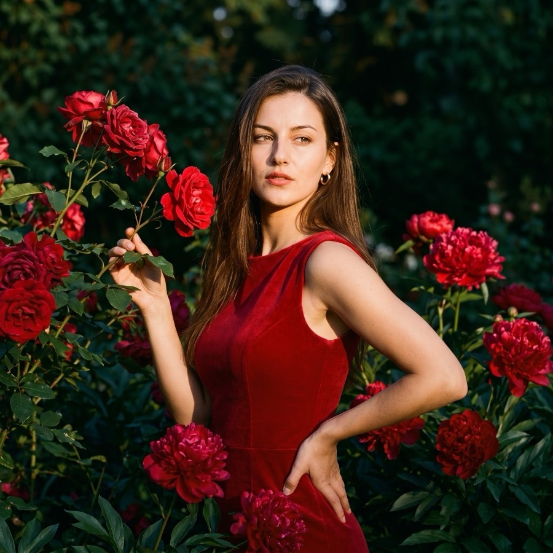
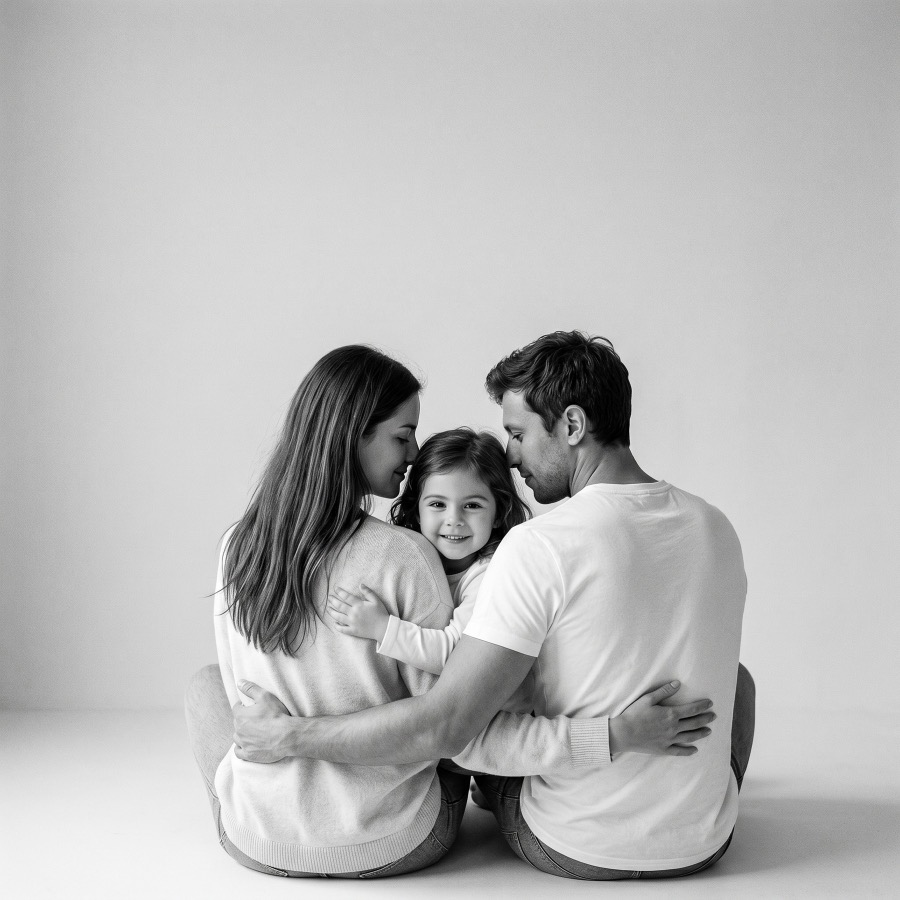
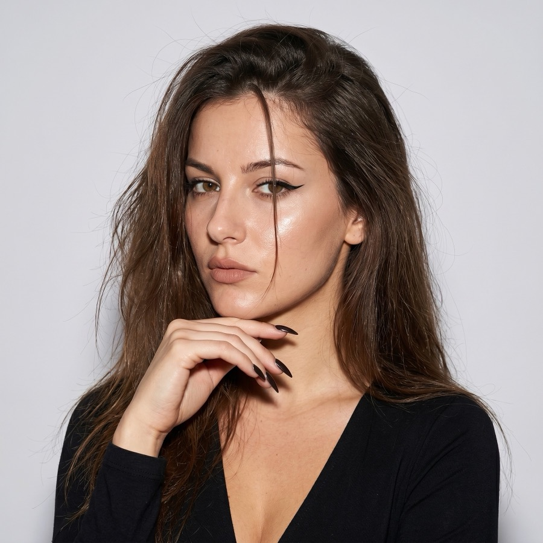

Промты для ИИ-фотосессии нужны, когда хочется получить не случайную картинку, а кадр с понятным визуальным направлением. Чем точнее вы задаете свет, фон, одежду и настроение, тем меньше генерация уходит в пластиковую ретушь, странные аксессуары и случайные детали.
Как писать промпт для ИИ-фотосессии
Начинайте с главного: “не изменяй внешность человека с фото”. Потом описывайте не общую красоту, а конкретику: где стоит человек, какой свет, какая поза, какая одежда, какой фон и чего не должно быть в кадре. Негативная часть промпта тоже важна: без пластиковой кожи, лишних людей, текста, логотипов, сильного HDR и случайных предметов.
Можно не писать с нуля
Откройте Kartivio, выберите шаблон или загрузите референс. Промпт можно скопировать отсюда и доработать перед генерацией.
Готовые промты с примерами
Эти примеры собраны по реальным направлениям из Kartivio. Их можно копировать целиком, но лучше менять детали под задачу: одежду, сезон, фон, эмоцию, формат кадра и степень контраста.

Портрет · golden hour
На закате с букетом
Не изменяй внешность девушки с фото. Сохрани лицо, возраст, пропорции, оттенок кожи, волосы и естественные черты. Создай фотореалистичный романтичный lifestyle-портрет на открытом воздухе в золотой час: девушка держит большой пышный букет нежно-розовых кустовых роз, букет частично закрывает нижнюю половину лица, видны глаза и мягкая улыбка. Камера чуть ниже уровня лица, на фоне большое голубое небо с кремовыми облаками. Свет теплый закатный, золотистые блики на коже, волосах и лепестках, мягкие тени, тонкое пленочное зерно, без пластиковой кожи, текста, логотипов и лишних людей.

Портрет · теплый свет
У окна в мягком свете
Сохрани внешность человека с фото максимально точно. Создай фотореалистичный портрет у окна в теплом естественном свете: человек находится рядом с легкой белой занавеской, часть лица мягко закрыта тканью, взгляд спокойный и прямой. Белая рубашка, натуральная кожа, мягкие тени, ощущение тихого утра, немного пленочной фактуры. Без глянцевой ретуши, случайных предметов, текста и логотипов.

Город · cinematic
На крыше
Используй фото пользователя как главный источник идентичности. Сохрани лицо, возраст, пропорции, волосы и естественные особенности. Создай атмосферный фотопортрет на крыше городского здания в теплый вечерний час: человек сидит на низком бетонном парапете, корпус немного отклонен назад, одна рука опирается позади, вторая лежит на бедре. Черный лаконичный образ, кожаная куртка на плечах, тонкие украшения, легкий ветер в волосах. Закатный свет, размытый город на фоне, уверенный спокойный взгляд, без позерства, текста и водяных знаков.

Цветы · editorial
Среди красных пионов
Не изменяй внешность девушки с фото. Максимально точно сохрани лицо, возраст, пропорции, оттенок кожи, волосы и естественные черты. Создай фотореалистичный женский editorial-портрет среди насыщенных красных пионов: девушка в лаконичном красном платье, спокойный уверенный взгляд, естественная поза, темная зелень на фоне, солнечные акценты на коже и волосах. Цвета глубокие, кожа натуральная, мягкое зерно, без тяжелой ретуши, лишних людей, текста и логотипов.
Город · lifestyle
Городская фактура
Сохрани внешность пользователя с фото. Создай фотореалистичный городской lifestyle-портрет на фоне фактурной синей стены или старых металлических шкафов: человек сидит расслабленно, корпус чуть наклонен вперед, взгляд спокойный и уверенный. Одежда темная, лаконичная, фон добавляет характер, но не спорит с лицом. Свет мягкий дневной, натуральная кожа, легкое пленочное зерно, без случайных людей, текста, логотипов и цифрового HDR.
Город · fashion
Снизу вверх в городе
Не изменяй внешность человека с фото. Создай выразительный городской fashion-портрет с ракурсом снизу вверх: человек стоит на улице в светлом костюме или монохромном образе, руки в карманах, взгляд уверенный, поза простая и сильная. На фоне городская архитектура и насыщенное синее небо. Свет теплый боковой, контраст умеренный, стиль editorial street photo, без лишних людей, текста и логотипов.

Семья · теплый кадр
Теплое объятие со спины
Сохрани внешность людей с загруженных фото и их естественные пропорции. Создай теплый семейный lifestyle-кадр: близкие люди стоят или сидят рядом, один мягко обнимает другого со спины, эмоция спокойная и живая. Свет золотистый, мягкий, фон природы или уютного двора слегка размыт. Одежда нейтральная, без ярких логотипов. Фотореализм, натуральные руки, настоящая близость, без случайных людей, текста, водяных знаков и чрезмерной ретуши.

Аватар · вспышка
Взгляд со вспышкой
Используй фото пользователя как источник внешности. Создай крупный портрет для аватара со вспышкой: лицо хорошо читается, взгляд прямой и живой, фон темный или нейтральный, свет от вспышки дает четкий контур и легкую тень. Кадр должен работать в маленьком размере: минимум деталей, акцент на глазах и лице, натуральная кожа, без beauty-retouch, текста, логотипов и лишних аксессуаров.
Студия · красный свет
Красный софит
Сохрани внешность человека с фото. Создай драматичный студийный portrait/editorial кадр на красном фоне с круглым световым пятном позади головы. Человек в красном или терракотовом жакете, поза спокойная и уверенная, взгляд в камеру, свет контрастный, но кожа остается натуральной. Атмосфера модной съемки, глубокие теплые цвета, мягкое зерно, без пластиковой ретуши, текста, логотипов и случайных предметов.
Как использовать референс вместо длинного промпта
Если сложно описать свет, позу или атмосферу, проще загрузить фото-референс. Kartivio может разобрать сцену, одежду, композицию и собрать готовый промпт. Это удобно, когда вы нашли кадр с нужным вайбом, но не хотите вручную расписывать каждую деталь.
Не пишите длинный промпт вручную
Загрузите референс или выберите готовый шаблон в Kartivio, а промпт можно доработать перед генерацией. Если нужно быстро стартовать, просто скопируйте пример выше.
Вопросы
Можно ли использовать эти промты без своих фото?
Да, но тогда получится обычная генерация образа, а не фотосессия с вашим лицом. Для портретного сходства лучше загрузить свои фото.
Почему результат иногда не похож?
Чаще всего причина в исходных фото: лицо плохо видно, есть сильные фильтры, низкая резкость или сложный ракурс.
Что лучше: готовый промпт или шаблон?
Шаблон быстрее для старта, промпт удобнее для точной идеи. Можно выбрать шаблон, а потом отредактировать текст под себя.
Какие модели используются для генерации фото?
В Kartivio можно выбирать Nano Banana, Nano Banana 2 и Nano Banana Pro. Модель влияет на скорость, характер результата и списание кредитов; точное списание видно перед запуском.